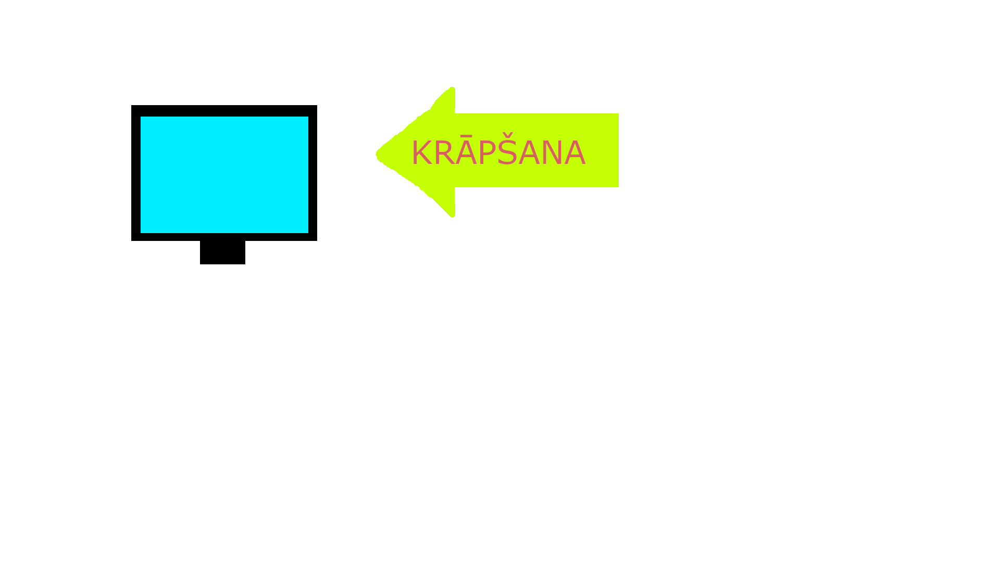
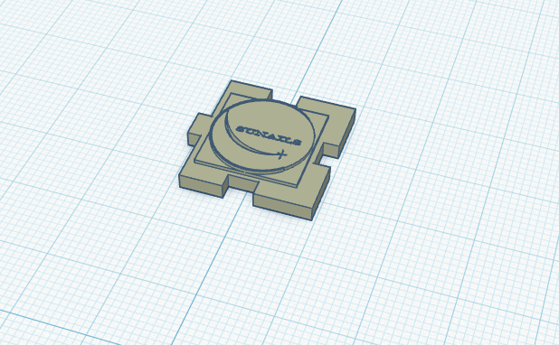

Tekstapstrāde
Tekstapstrādē mācījos formatēt dokumentus, veidot virsrakstus, sakārtot informāciju un noformēt saturu un atsauces. Kā pierādījumu pievienoju Word dokumentu Sociālā inženierija
Attēlu apstrāde
Attēlu apstrādē iepazinu gan rastra grafiku, gan vektorgrafiku. Zemāk redzami mani darba piemēri.
Rastra grafika - GIF animācija

GIF parāda kustīgu rastra grafikas piemēru. Veidojām šo gada sākumā tēmā GIMP
Vektorgrafika - logo
Veidoju šo programmā Inkscape, kā WROBOT uzņēmuma logo. Šo logo pēc tam piedāvāju kā iespēju veidot citām grupām kā 3D projektu.
3D modelēšana
3D modelēšanā veidoju kuba skaldni, kā arī novedu kuba projektu līdz īstenībai.

Attēlā redzama mana izveidotā kuba skaldne. Katrs no grupas izveidojām vienu kuba skaldni par logo "Sunnails".
Video parādīta 3D modeļa veidošanas gaita.
Izklājlapas
Mācījos strādāt ar Excel, veidot diagrammas, formulas, tās labot, analizēt grafikus un kārtot datus.
Papildu uzdevumi
HTML uzdevumi: